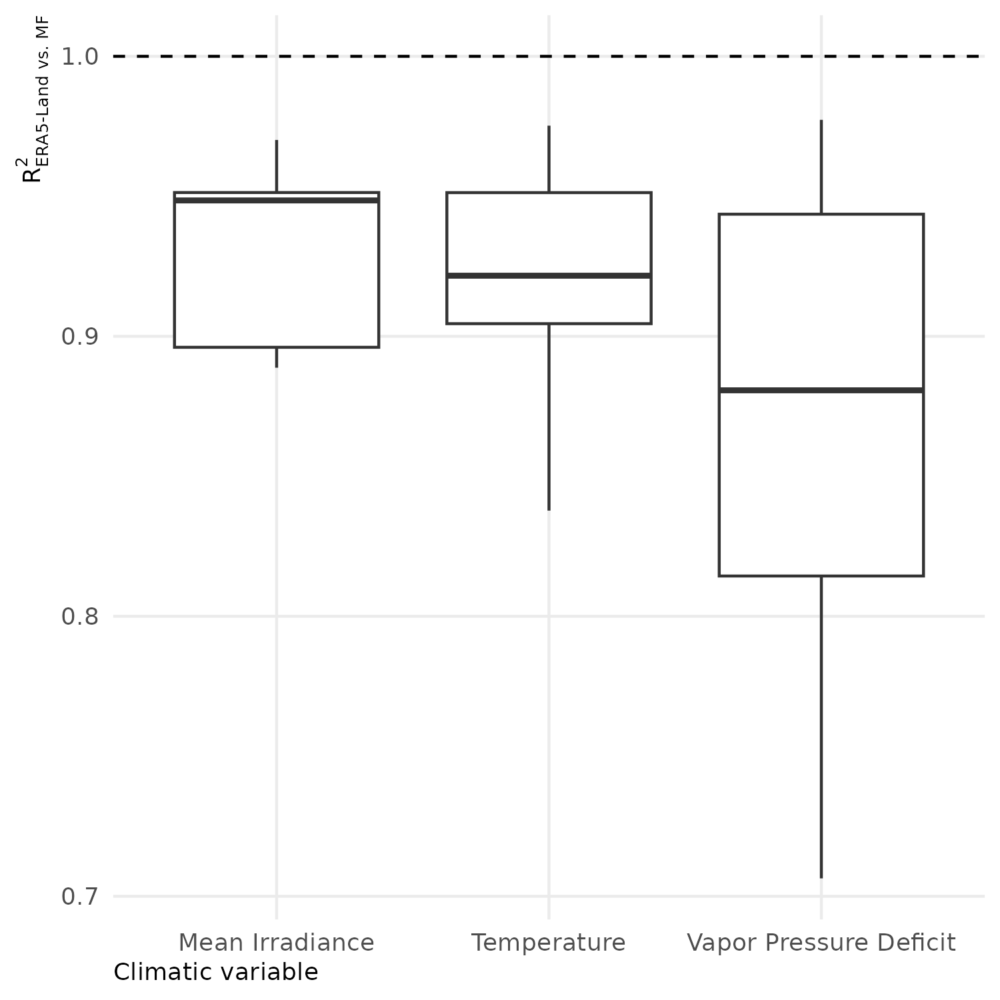

Environmental predictors represented three nested spatial scales: * regional climate, summarised by two continuous indices (Clim1–Clim2) derived from multivariate monthly climate patterns; * geomorphological landscapes, represented by a categorical geomorphological subtype map (nested within broader landscape types) capturing mesoscale landform-driven hydro-edaphic contrasts; * local topography, quantified by the SAGA Wetness Index (SWI) summarised within each inventory unit as a fine-scale proxy of relative soil wetness
Regional-scale climatic variability was summarised from monthly data (1970–2023) obtained from the ERA5-Land reanalysis (Muñoz-Sabater et al. 2021). We extracted monthly climate variables at native resolution (9 km), and applied additive seasonal decomposition to isolate the seasonal cycle (removing long-term trends) using rcontrollclimate pipeline(Schmitt et al. 2023).
ERA5-Land vs. regional meteorological datasets (Météo-France)
Figure 1: Locations and instruments of the regional meteorological stations from Météo France network. Black areas indicate geomorphological landscapes not included in this study.
To evaluate the local validity of reanalysis data, we compared demeaned monthly cycles from ERA5-Land against available meteorological stations (for variables with adequate coverage). Monthly variations in temperature, irradiance, and VPD were compared with monthly variations measured by the regional meteorological station network (Météo France 2023). The station data were filtered to keep only those with more than 30 records per month and with records for all months and hours of the day, and then averaged at the monthly scale. The monthly patterns of the station data were then compared with the corresponding monthly patterns extracted from ERA5-Land at the nearest grid cell to each station location.
Code
if (!file.exists(here_rel("notebook", "figs","Meteo-france-plot.png"))) { g <- ERA5_MF_Comp |>group_by(NOM_USUEL,variable) |>do( R2 = (cbind(.$ERA5_value,.$MF_value) |>cor())[2,1]^2) |>unnest(cols =c(R2)) |>group_by(variable) |>mutate(variable =case_when(variable =="Temp"~"Temperature", variable =="GLO2"~"Mean Irradiance", variable =="VPD"~"Vapor Pressure Deficit")) |>ggplot() +geom_boxplot(aes(x = variable, y = R2)) +geom_hline(yintercept =1, linetype ="dashed", color ="black") +labs(x ="Climatic variable", y =expression(R['ERA5-Land vs. MF']^{2})) ggsave(plot = g, filename =here_rel("notebook", "figs","Meteo-france-plot.png"), bg ="white", width =5,height =5)} knitr::include_graphics(here_rel("notebook", "figs","Meteo-france-plot.png"))

Comparison of monthly patterns of temperature, mean irradiance, and vapor pressure deficit between ERA5-Land reanalysis and the Météo France station network. The dashed line indicates a perfect fit (R² = 1).
Biplot of the first two multivariate functional principal components (MFPCA) summarising the dominant seasonal patterns of temperature, precipitation, irradiance, wind speed, and vapour pressure deficit across French Guiana. The first two MFPCA axes (Clim1 and Clim2) are shown with their associated variable loadings (arrows).
The two regional climate indices (Clim1 and Clim2) were obtained by applying a multivariate functional principal component analysis (MFPCA) to monthly seasonal patterns of temperature, precipitation, irradiance, wind speed, and vapour pressure deficit (Happ and Greven 2018). These indices summarise the dominant, correlated seasonal dynamics across variables.
Figure 4: Locations of forest inventory plots across geomorphological landscapes of French Guiana.
Geomorphological landscapes were described using a landscape classification (Guitet et al. 2013), in which broad geomorphological types (e.g. coastal, multiconvex, multiconcave, plateaux, high relief) are subdivided into finer geomorphological subtypes (coded 1–13 in Figure 4). In analyses, subtypes are used as the primary categorical predictor to capture mesoscale landform-driven hydro-edaphic contrasts, while types provide a higher-level summary for reporting and interpretation.
Geomorphological landscape type
Geomorphological landscape subtype
Share of area (%)
Mean altitude (m)
Mean altitude range (m)
Mean hillslope (%)
Dominant soils
Coastal
① - coastal flat plains
2%
<100
<40
<10
Arenosol, acrisol, gleysols
② - plains with residual relief
1%
<100
<40
10-15
Acrisols dominant
③ - coastal white sands
0.1%
<100
<40
<10
Podsols
Multiconcave
④ - inland plains with residual relief
7%
100-200
20-60
10-15
Acrisols dominant
⑤ - inland flat plains
1%
100-200
20-60
10-15
Acrisols dominant
Multiconvex
⑥ - low hills and large valleys
4%
50-150
20-60
10-15
Acrisols and arenosols
⑦ - complex hilly areas
5%
50-150
40-90
10-25
Acrisols and ferralsols
⑧ - peneplain with moderate hills
7%
50-150
40-60
10-15
Acrisols dominant
⑨ - regular pattern hilly areas
6%
<150
40-90
15-25
Acrisols dominant
Plateaux
⑩ - very moderate plateau
12%
50-200
40-60
10-20
Ferralsols dominant
⑪ - long and high plateau,
9%
50-200
60-150
15-25
Ferralsols dominant
High reliefs
⑫ - high hills
14%
50-200
>150
>20
Ferralsols and plinthosols
⑬ - sub-montane relief
0.3%
200-500
>150
10-25
Ferralsols and plinthosols
Local topography
Local topographic variation was assessed with a topographic wetness index. We used the SAGA Wetness Index (Böhner and Selige 2006), as an indicator of the local distribution of water and nutrients in the soil (Schmitt et al. 2021). The SWI estimates the expected local water accumulation by combining upslope contributing area and slope. A first step consist in computing the flow accumulation from a Digital Elevation Model using a multiple flow direction approach (Freeman) and derives a specific catchment area (SCA) (contributing area per unit contour width). To reduce artefacts in low-relief terrain, where standard wetness indices can produce unstable or spuriously high values in flat valley bottoms, a second step applies an iterative modification of the SCA that constrains contributing area in nearly planar zones as a function of local slope and neighbourhood maxima, thereby yielding more realistic wetness patterns under weak gradients. The SWI is then calculated as follow: \[
SWI = log\left(\dfrac{SCA}{tan(\beta)}\right)
\]
where \(\beta\) is the local slope angle and \(SCA\) is the corrected specific catchment area.
We used a 10 m aggregated version of the high-resolution RGE ALTI® DEM (IGN 2023), which covers French Guiana with two large-scale methods (radar and image correlation). SWI was computed across French Guiana using elevation with SAGA GIS (Conrad et al. 2015). Due to a strong right skewness in SWI, we used the median SWI per inventory unit and verified its representativeness using the within inventory unit coefficient of variation of SWI:
Code
SWI_extract_path <-here_rel("data","microtopo_data","SWI_extract.tsv")SWI_extract <- vroom::vroom(SWI_extract_path)## Rows: 71245 Columns: 2## ── Column specification ────────────────────────────────────────────────────────────────────────────────────────────────## Delimiter: "\t"## chr (1): PlotID## dbl (1): SWI## ## ℹ Use `spec()` to retrieve the full column specification for this data.## ℹ Specify the column types or set `show_col_types = FALSE` to quiet this message.SWI_extract |>mutate(PlotID =factor(PlotID)) |>group_by(PlotID) |>summarize(Median =log(median(SWI)+1), Sigma =sqrt(var(log(SWI+1)))) |>ungroup() |>mutate(Cov = Sigma/Median) |>summarize(`Mean (%)`=100*mean(Cov, na.rm =TRUE),`2.5% bound (%)`=100*quantile(Cov, 0.025, na.rm =TRUE), `97.5% bound (%)`=100*quantile(Cov, 0.975, na.rm =TRUE))|>mutate(`Variable`="Median SWI") |>select(`Variable`,`Mean (%)`, `2.5% bound (%)`, `97.5% bound (%)`)|>gt() |>fmt_number(columns =c(`Variable`,`Mean (%)`, `2.5% bound (%)`, `97.5% bound (%)`), decimals =2) |>opts_theme()
Distribution of coefficient of variation for SWI within inventory units.
Variable
Mean (%)
2.5% bound (%)
97.5% bound (%)
Median SWI
3.16
0.44
9.96
References
Böhner, Jürgen, and Thomas Selige. 2006. “Spatial Prediction of Soil Attributes Using Terrain Analysis and Climate Regionalization.”Gottinger Geograpihsche Abhandlungen 115.
Conrad, O., B. Bechtel, M. Bock, H. Dietrich, E. Fischer, L. Gerlitz, J. Wehberg, V. Wichmann, and J. Böhner. 2015. “System for Automated Geoscientific Analyses (SAGA) v. 2.1.4.”Geoscientific Model Development 8 (7): 1991–2007. https://doi.org/10.5194/gmd-8-1991-2015.
Guitet, Stéphane, Jean-François Cornu, Olivier Brunaux, Julie Betbeder, Jean-Michel Carozza, and Cécile Richard-Hansen. 2013. “Landform and Landscape Mapping, French Guiana (South America).”Journal of Maps 9 (3): 325–35. https://doi.org/10.1080/17445647.2013.785371.
Happ, Clara, and Sonja Greven. 2018. “Multivariate Functional Principal Component Analysis for Data Observed on Different (Dimensional) Domains.”Journal of the American Statistical Association 113 (522): 649–59. https://doi.org/10.1080/01621459.2016.1273115.
IGN. 2023. “Large scale french digital terrain model (RGE ALTI).” {Dataset}. https://geoservices.ign.fr/rgealti: geoservices.ign.fr.
Météo France. 2023. “Basic Monthly Climatological Data from 1950 to 2023 - French Guiana (Department 973 - France).” Dataset. https://www.data.gouv.fr/: data.gouv.fr.
Muñoz-Sabater, Joaquín, Emanuel Dutra, Anna Agustí-Panareda, Clément Albergel, Gabriele Arduini, Gianpaolo Balsamo, Souhail Boussetta, et al. 2021. “ERA5-Land: A State-of-the-Art Global Reanalysis Dataset for Land Applications.”Earth System Science Data 13 (9): 4349–83. https://doi.org/10.5194/essd-13-4349-2021.
Schmitt, Sylvain, Guillaume Salzet, Fabian Jörg Fischer, Isabelle Maréchaux, and Jerome Chave. 2023. “Rcontroll : An R Interface for the Individual-Based Forest Dynamics Simulator TROLL.”Methods in Ecology and Evolution, September, 2041–210X.14215. https://doi.org/10.1111/2041-210X.14215.
Schmitt, Sylvain, Niklas Tysklind, Bruno Hérault, and Myriam Heuertz. 2021. “Topography Drives Microgeographic Adaptations of Closely Related Species in Two Tropical Tree Species Complexes.”Molecular Ecology 30 (20): 5080–93. https://doi.org/10.1111/mec.16116.
Source Code
---title: "Environmental predictors"format: html: code-fold: true---```{r setup, include=FALSE}knitr::opts_chunk$set( fig.align = "center", fig.retina = 3, fig.width = 6, fig.height = (6 * 0.618), out.width = "80%", collapse = TRUE, dev = "ragg_png")options( digits = 3, width = 120, dplyr.summarise.inform = FALSE, knitr.kable.NA = "")here_rel <- function(...) { fs::path_rel(here::here(...))}``````{r libraries-data, warning=FALSE, message=FALSE}library(tidyverse)library(readr)library(gt)library(gtExtras)library(leaflet)library(sf)library(terra)source(here_rel("R", "funs_data.R"))source(here_rel("R", "funs_graphics.R"))source(here_rel("R", "funs_plot_tables.R"))theme_set(theme_public())``````{r}#| echo: false#| message: falsePlot_table_path <-here_rel("data", "inventory_data", "Plot_description.csv")Shp_plots_path <-here_rel("data", "shp", "GF_sampling.shp")Guyane_path <-here_rel("data", "shp", "guyane.shp")Plot_table <-read_csv2(Plot_table_path)Shp_plots <-read_sf(Shp_plots_path, quiet =TRUE)Guyane <-read_sf(Guyane_path, quiet =TRUE) |>st_transform("EPSG:4326")```# OverviewEnvironmental predictors represented three nested spatial scales: * regional climate, summarised by two continuous indices (Clim1–Clim2) derived from multivariate monthly climate patterns; * geomorphological landscapes, represented by a categorical geomorphological subtype map (nested within broader landscape types) capturing mesoscale landform-driven hydro-edaphic contrasts; * local topography, quantified by the SAGA Wetness Index (SWI) summarised within each inventory unit as a fine-scale proxy of relative soil wetness## Regional climate```{r}#| label: Climate-extractif(file.exists(here_rel("data","climatic_data", "ERA5Land_RAW.rds"))){ Climate_data_mth <-readRDS(here_rel("data", "climatic_data", "ERA5Land_RAW.rds"))}else{ Climate_data_mth <-prepare_ERA5Land_RAW(path_ERA5L_mth =here_rel("data", "climatic_data", "ERA5Land_FG_mth.nc"),path_ERA5L_dly =here_rel("data", "climatic_data", "ERA5Land_FG_dly.nc"),GF_bboxShp_path =here_rel("data", "shp", "Guyane.shp"),ncores =min(parallel::detectCores() -1, 10) )}if (!file.exists(here_rel("notebook","figs","Meteo-france-plot.png"))) { MeteoFrance_Data <- vroom::vroom(here_rel("data", "climatic_data", "Meteo_france_973_80-22.tsv.gz"),guess_max =100000) |>rename(Temp = T, GLO2 = GLO2, FF = FF, RR = RR1) |>mutate(yr =str_sub(AAAAMMJJHH, 1,4), mth =str_sub(AAAAMMJJHH, 5,6),dy =str_sub(AAAAMMJJHH, 7,8),hr =str_sub(AAAAMMJJHH, 9,10), Day = lubridate::ymd_h(AAAAMMJJHH,tz ="America/Cayenne") ) |>mutate(hr =as.integer(hr))|>filter(as.integer(yr) >1979, as.integer(yr) <2023) |>mutate(VPD =.DewtoVPD(TD, Temp)) |># Compute VPD from relative Dewpoint and observered temperatures using Buck (1981)select(-TD) Clim_MF_973 <- MeteoFrance_Data |>group_by(NOM_USUEL, yr, mth) |># Gather data at monthly scale (check)mutate(tp =sum(RR, na.rm =TRUE) /10) |>ungroup() |>select(NOM_USUEL, Temp, VPD, GLO2, tp, FF, mth, hr) |>gather("variable", "value", -NOM_USUEL, -mth,-hr) |>na.exclude() |>group_by(NOM_USUEL,variable) |>filter(all(str_pad(width =2, side ="left", pad ="0", as.character(1:12)) %in%unique(mth))) |>group_by(NOM_USUEL, mth, variable) |>filter(all(0:23%in%unique(hr))) |>group_by(NOM_USUEL,mth,hr,variable) |>mutate(value =if_else(variable =="GLO2", mean(value), value)) Clim_MF_973_mth <- Clim_MF_973 |>filter(variable =="GLO2"& hr >9& hr <17| variable !="GLO2") |>group_by(NOM_USUEL, mth, variable) |>filter(n() >30) |># keep station with more than 30 records per variablesummarise_if(is.numeric, mean, na.rm =TRUE) |>filter((variable =="tp"& value !=0) | variable !="tp") |>group_by(NOM_USUEL, mth, variable) |>summarise(MF_value =mean(value)) |>ungroup()|>mutate(mth =as.integer(mth))|>group_by(variable) |>mutate(MF_mean_var =mean(MF_value)) |>mutate(MF_value = MF_value - MF_mean_var) # Apply additive mean-bias correction to align ERA5-Land temperatures with station values Station <- MeteoFrance_Data |>select(NOM_USUEL, LON, LAT) |>filter(NOM_USUEL %in%unique(Clim_MF_973_mth$NOM_USUEL)) |>distinct() |> sf::st_as_sf(coords =c("LON", "LAT"), crs ="EPSG:4326") Station$ID <- Climate_data_mth$coords_GF_sf$ID[sf::st_nearest_feature(sf::st_as_sf(Station), sf::st_as_sf(Climate_data_mth$coords_GF_sf))] ERA5_MF_Comp <- Station |>st_drop_geometry() |>inner_join(Climate_data_mth$climate_GF |>filter(ID %in% Station$ID) |>select(ID, month, Temperature, MeanIrradiance, VaporPressureDeficit), by ="ID",relationship ="many-to-many") |>rename(mth = month) |>rename(Temp = Temperature,GLO2 = MeanIrradiance, VPD = VaporPressureDeficit) |>select(-ID) |>gather("variable", "ERA5_value", -NOM_USUEL, -mth) |>group_by(variable) |>mutate(ERA5_mean_var =mean(ERA5_value)) |>mutate(ERA5_value = ERA5_value - ERA5_mean_var) |>left_join(Clim_MF_973_mth, by =c("NOM_USUEL", "mth", "variable")) |>na.exclude() } ```Regional-scale climatic variability was summarised from monthly data (1970–2023) obtained from the ERA5-Land reanalysis [@munozsabaterERA5LandStateoftheartGlobal2021]. We extracted monthly climate variables at native resolution (9 km), and applied additive seasonal decomposition to isolate the seasonal cycle (removing long-term trends) using *rcontroll* [climate pipeline](https://sylvainschmitt.github.io/rcontroll/articles/climate.html)[@schmittRcontrollInterfaceIndividual2023]. ### ERA5-Land vs. regional meteorological datasets (Météo-France)```{r}#| label: fig-mf-network#| fig-cap: "Locations and instruments of the regional meteorological stations from Météo France network. Black areas indicate geomorphological landscapes not included in this study."mf_map <-here_rel("notebook", "figs", "MF_Network_map.png")if (file.exists(mf_map)){knitr::include_graphics(mf_map)}```To evaluate the local validity of reanalysis data, we compared demeaned monthly cycles from ERA5-Land against available meteorological stations (for variables with adequate coverage). Monthly variations in temperature, irradiance, and VPD were compared with monthly variations measured by the regional meteorological station network [@meteofranceBasicMonthlyClimatological2023]. The station data were filtered to keep only those with more than 30 records per month and with records for all months and hours of the day, and then averaged at the monthly scale. The monthly patterns of the station data were then compared with the corresponding monthly patterns extracted from ERA5-Land at the nearest grid cell to each station location.```{r}#| label: Meteo-france-plot#| fig-cap: "Comparison of monthly patterns of temperature, mean irradiance, and vapor pressure deficit between ERA5-Land reanalysis and the Météo France station network. The dashed line indicates a perfect fit (R² = 1)."if (!file.exists(here_rel("notebook", "figs","Meteo-france-plot.png"))) { g <- ERA5_MF_Comp |>group_by(NOM_USUEL,variable) |>do( R2 = (cbind(.$ERA5_value,.$MF_value) |>cor())[2,1]^2) |>unnest(cols =c(R2)) |>group_by(variable) |>mutate(variable =case_when(variable =="Temp"~"Temperature", variable =="GLO2"~"Mean Irradiance", variable =="VPD"~"Vapor Pressure Deficit")) |>ggplot() +geom_boxplot(aes(x = variable, y = R2)) +geom_hline(yintercept =1, linetype ="dashed", color ="black") +labs(x ="Climatic variable", y =expression(R['ERA5-Land vs. MF']^{2})) ggsave(plot = g, filename =here_rel("notebook", "figs","Meteo-france-plot.png"), bg ="white", width =5,height =5)} knitr::include_graphics(here_rel("notebook", "figs","Meteo-france-plot.png"))```### MFPCA of annual patterns of ERA5-Land data```{r}#| label: MFPCA-analysis#| fig-cap: "Biplot of the first two multivariate functional principal components (MFPCA) summarising the dominant seasonal patterns of temperature, precipitation, irradiance, wind speed, and vapour pressure deficit across French Guiana. The first two MFPCA axes (Clim1 and Clim2) are shown with their associated variable loadings (arrows)."if (!file.exists(here_rel("notebook", "figs","MFPCA-analysis.png"))) {if (file.exists(here_rel("data", "climatic_data", "ERA5Land_RAW.rds"))) { MFPCA_GF <-readRDS(here_rel("data", "climatic_data", "MFPCA_GF.rds")) } else { MFPCA_GF <-MFPCA_extraction(Climate_data_mth,select_vars =c("Temperature", "Rainfall", "WindSpeed","MeanIrradiance", "VaporPressureDeficit" ) ) } g <-plot_MFPCA(MFPCA_GF)ggsave(plot = g, filename =here_rel("notebook", "figs","MFPCA-analysis.png"), bg ="white", width =10,height =5)} knitr::include_graphics(here_rel("notebook", "figs","MFPCA-analysis.png"))```The two regional climate indices (Clim1 and Clim2) were obtained by applying a multivariate functional principal component analysis (MFPCA) to monthly seasonal patterns of temperature, precipitation, irradiance, wind speed, and vapour pressure deficit [@happMultivariateFunctionalPrincipal2018]. These indices summarise the dominant, correlated seasonal dynamics across variables.```{r}#| label: fig-clim1#| fig-cap: "Regional projection of Clim1 coefficient"Clim1_map <-here_rel("notebook", "figs", "fPCA1_map.png")if (file.exists(Clim1_map)) knitr::include_graphics(Clim1_map)``````{r}#| label: fig-clim2#| fig-cap: "Regional projection of Clim2 coefficient"Clim2_map <-here_rel("notebook", "figs", "fPCA2_map.png")if (file.exists(Clim2_map)) knitr::include_graphics(Clim2_map)```## Geomorphological landscapes```{r}#| label: fig-geomorphology#| fig-align: center#| fig-cap: "Locations of forest inventory plots across geomorphological landscapes of French Guiana."hab_map <-here_rel("notebook", "figs", "Habitat_map.png")if (file.exists(hab_map)) knitr::include_graphics(hab_map)```Geomorphological landscapes were described using a landscape classification [@guitetLandformLandscapeMapping2013], in which broad geomorphological types (e.g. coastal, multiconvex, multiconcave, plateaux, high relief) are subdivided into finer geomorphological subtypes (coded 1–13 in @fig-geomorphology). In analyses, subtypes are used as the primary categorical predictor to capture mesoscale landform-driven hydro-edaphic contrasts, while types provide a higher-level summary for reporting and interpretation.| Geomorphological landscape type| Geomorphological landscape subtype | Share of area (%) | Mean altitude (m) | Mean altitude range (m) | Mean hillslope (%) | Dominant soils ||---|---|---|---|---|---|---|| Coastal | ① - coastal flat plains | 2% | <100 | <40 | <10 | Arenosol, acrisol, gleysols || | ② - plains with residual relief | 1% | <100 | <40 | 10-15 | Acrisols dominant || | ③ - coastal white sands | 0.1% | <100 | <40 | <10 | Podsols || Multiconcave | ④ - inland plains with residual relief | 7% | 100-200 | 20-60 | 10-15 | Acrisols dominant || | ⑤ - inland flat plains | 1% | 100-200 | 20-60 | 10-15 | Acrisols dominant || Multiconvex | ⑥ - low hills and large valleys | 4% | 50-150 | 20-60 | 10-15 | Acrisols and arenosols || | ⑦ - complex hilly areas | 5% | 50-150 | 40-90 | 10-25 | Acrisols and ferralsols || | ⑧ - peneplain with moderate hills | 7% | 50-150 | 40-60 | 10-15 | Acrisols dominant || | ⑨ - regular pattern hilly areas | 6% | <150 | 40-90 | 15-25 | Acrisols dominant || Plateaux | ⑩ - very moderate plateau | 12% | 50-200 | 40-60 | 10-20 | Ferralsols dominant || | ⑪ - long and high plateau, | 9% | 50-200 | 60-150 | 15-25 | Ferralsols dominant || High reliefs | ⑫ - high hills | 14% | 50-200 | >150 | >20 | Ferralsols and plinthosols || | ⑬ - sub-montane relief | 0.3% | 200-500 | >150 | 10-25 | Ferralsols and plinthosols |## Local topographyLocal topographic variation was assessed with a topographic wetness index. We used the SAGA Wetness Index [@bohnerSpatialPredictionSoil2006], as an indicator of the local distribution of water and nutrients in the soil [@schmittTopographyDrivesMicrogeographic2021].The SWI estimates the expected local water accumulation by combining upslope contributing area and slope. A first step consist in computing the flow accumulation from a Digital Elevation Model using a multiple flow direction approach (Freeman) and derives a specific catchment area (SCA) (contributing area per unit contour width). To reduce artefacts in low-relief terrain, where standard wetness indices can produce unstable or spuriously high values in flat valley bottoms, a second step applies an iterative modification of the SCA that constrains contributing area in nearly planar zones as a function of local slope and neighbourhood maxima, thereby yielding more realistic wetness patterns under weak gradients. The SWI is then calculated as follow: $$SWI = log\left(\dfrac{SCA}{tan(\beta)}\right)$$where $\beta$ is the local slope angle and $SCA$ is the corrected specific catchment area.We used a 10 m aggregated version of the high-resolution RGE ALTI® DEM [@ignLargeScaleFrench2023], which covers French Guiana with two large-scale methods (radar and image correlation). SWI was computed across French Guiana using elevation with SAGA GIS [@conradSystemAutomatedGeoscientific2015]. Due to a strong right skewness in SWI, we used the median SWI per inventory unit and verified its representativeness using the within inventory unit coefficient of variation of SWI:```{r}#| label: tab-SWI-dist#| tbl-cap: "Distribution of coefficient of variation for SWI within inventory units."SWI_extract_path <-here_rel("data","microtopo_data","SWI_extract.tsv")SWI_extract <- vroom::vroom(SWI_extract_path)SWI_extract |>mutate(PlotID =factor(PlotID)) |>group_by(PlotID) |>summarize(Median =log(median(SWI)+1), Sigma =sqrt(var(log(SWI+1)))) |>ungroup() |>mutate(Cov = Sigma/Median) |>summarize(`Mean (%)`=100*mean(Cov, na.rm =TRUE),`2.5% bound (%)`=100*quantile(Cov, 0.025, na.rm =TRUE), `97.5% bound (%)`=100*quantile(Cov, 0.975, na.rm =TRUE))|>mutate(`Variable`="Median SWI") |>select(`Variable`,`Mean (%)`, `2.5% bound (%)`, `97.5% bound (%)`)|>gt() |>fmt_number(columns =c(`Variable`,`Mean (%)`, `2.5% bound (%)`, `97.5% bound (%)`), decimals =2) |>opts_theme()```